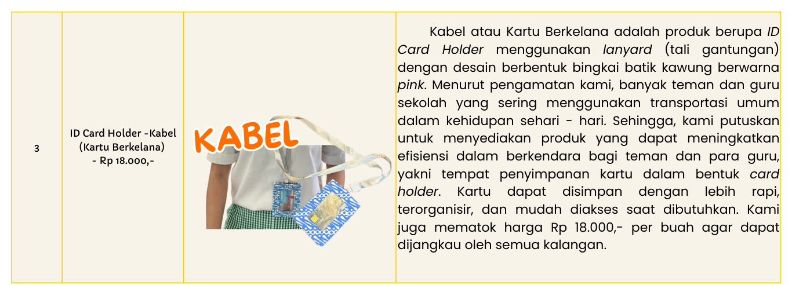
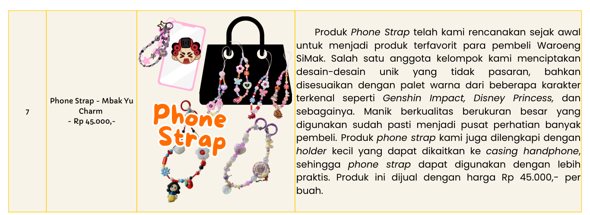
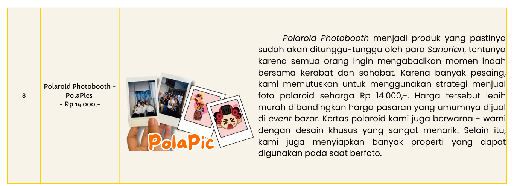
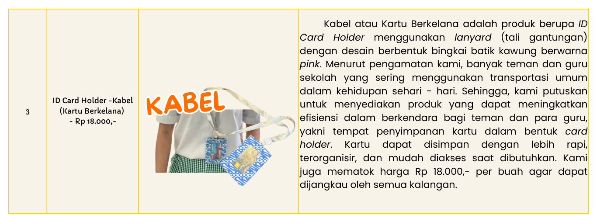
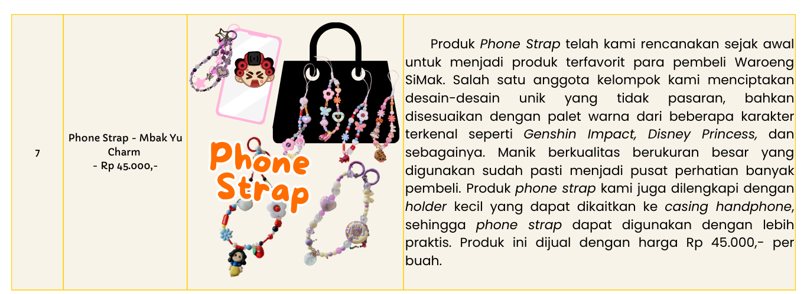
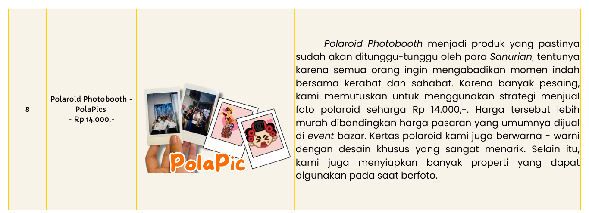

PERENCANAAN PRODUKSI
Kegiatan bazar dan pentas seni SMP Santa Ursula Jakarta yang berlangsung:
- Tanggal:14 dan 16 Januari 2025
- Waktu:10.00 s.d. 14.30 WIB
- Tempat:SMP Santa Ursula Jakarta
Mengangkat tema “Puspa Nusa” tema Puspa Nusa. Puspa Nusa" dalam KBBI berarti "bunga-bunga dan pulau-pulau," mengacu pada kekayaan flora dan pulau-pulau di Indonesia, yang sering digunakan untuk menggambarkan keindahan alam dan keragaman hayati Indonesia. Oleh karena itu, kelompok kami merasa tepat untuk memilih Provinsi Daerah Istimewa Yogyakarta untuk dijadikan profil tema situs/website, nuansa dekorasi booth saat bazar, hingga desain dari beberapa jenis produk yang kami jual. Kami memulai persiapan secara bertahap, mulai dari penentuan tema dan konsep, hingga pemilihan jenis produk, dan penetapan harga jual.
Kelompok kami membutuhkan waktu sekitar tiga minggu sejak pemilihan anggota kelompok dilaksanakan secara acak, tepatnya bulan Agustus 2025, untuk menentukan jenis dan jumlah produk yang akan dijual saat bazar. Beberapa kriteria penentuan dari produk yang akan dijual yaitu:
- Mengandung unsur budaya Indonesia
- Desain menarik atau eye - catching
- Unik dan fungsional
- Sedang tren
- Sesuai dengan selera atau minat target pembeli
Akhirnya, kami memutuskan untuk menjual 11 jenis
produk, yaitu:
 






HOW TO MAKE FERMENTED HONEY LIP BALM
Note: This recipe is enough to make 3 lip balms.
- Tools and Materials
- Tools for fermentation:
- 1 jar for storing honey
- Tools for making the lip balm:
- 1 chocolate melter
- Measuring spoons
- Bowls
- 1 pack of tissue paper
- Materials for fermentation:
- 1/4 honey pineapples (cut into pieces)
- Organic honey - 200 ml
- Materials for making the lip balm:
- Beeswax - 6 gr
- Soy wax - 2.5 gr
- Cocoa butter - 2.5 gr
- Shea butter - 2.5 gr
- Coloring (mica powder) - ⅛ teaspoon
- Fermented honey - 2.5 ml
- Almond oil - 5 ml
- 3 honey-shaped lip balm container + small honey dipper
- Tools for fermentation:
- Step-by-Step
- Part One: Fermenting the Honey
- Before making the lip balm, the honey must be fermented with pineapple.
- The pineapple is placed into an empty jar.
- Then, organic honey is poured into the jar.
- Seal the container tightly and leave the mixture in a dark room at room temperature for five days.
- Each day, the lid should be loosened slightly to release gas pressure.
- After five days, the honey is strained, and the pineapple is removed. The fermented pineapple can be eaten directly or processed into candied fruit. Meanwhile, the fermented honey is set aside for making the lip balm.
- Part Two: Making the Lip Balm
- Once the honey is fermented, prepare all the tools and ingredients.
- Then, 6 gr of beeswax is added to the chocolate melter.
- After that, measure and pour 5 ml of almond oil into the mixture.
- 2.5 gr of cocoa butter, 2.5 gr of shea butter, 2.5 gr of soy wax, and 2.5 ml of fermented honey are added as well.
- The chocolate melter is set to level 2, and the mixture is heated until fully melted.
- Next, ⅛ teaspoon of mica powder is added.
- Stir all ingredients until evenly mixed.
- Finally, the mixture is poured into storage containers and placed in the refrigerator for 15 minutes.
- Once set, the honey lip balm is removed from the fridge and is ready to use.
- Part One: Fermenting the Honey
HOW TO MAKE CHURROS
Note: This recipe is enough to make 20 churros.
- Tools and Materials
- Tools:
- Mixing bowl
- Spatula
- Measuring cup
- Spoon
- Pot
- Saucepan
- Strainer or tongs
- Cooking paper towels
- Digital kitchen scale
- Heatproof bowl
- Piping bag with a star-shaped nozzle
- Materials
- For the Churros:
- 125 grams of flour
- 25 grams of margarine
- 225–250 ml of water
- 1 egg (room temperature)
- 1 tablespoon of sugar (adjust to taste)
- A pinch of salt
- Vegetable oil (for frying)
- For Coating:
- 100 grams of sugar
- 1 teaspoon of cinnamon powder
- For Chocolate Sauce (Optional):
- 300 ml milk
- Nutella (as needed)
- For the Churros:
- Tools:
- Step-by-Step
- Measure all ingredients accurately using a kitchen scale.
- Heat water, margarine, sugar, and salt in a pot until it bubbles.
- Add flour at once and stir until a smooth dough forms.
- Remove from heat and let it cool for 5–10 minutes.
- Transfer the dough to a mixing bowl.
- Mix in the egg until fully incorporated.
- Heat vegetable oil in a pot to 170°C (340°F).
- Transfer dough into a piping bag with a star nozzle.
- Pipe 10–15 cm strips into the hot oil, cutting with a spoon.
- Fry for 3–4 minutes until golden brown.
- Drain the churros on cooking paper towels.
- Roll in a sugar and cinnamon mixture while still warm.
- Heat water in a saucepan and place a bowl over it.
- Add Nutella and milk, stirring until smooth.
- Remove the sauce from heat.
- Arrange churros for serving with Nutella sauce.